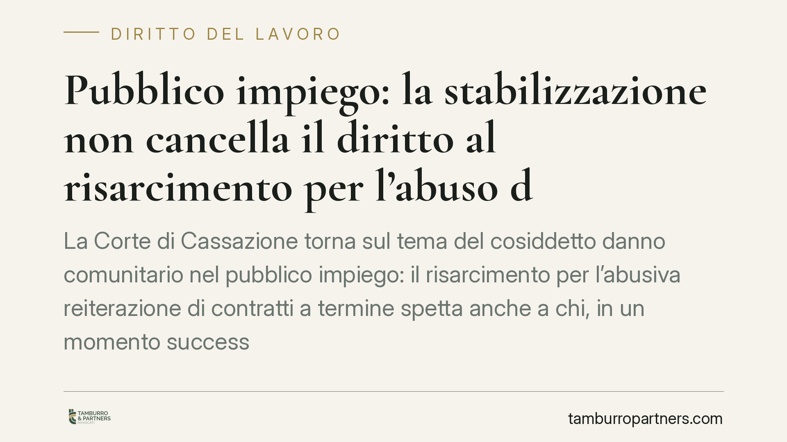

Pubblico impiego: la stabilizzazione non cancella il diritto al risarcimento per l'abuso dei contratti a termine
La Corte di Cassazione torna sul tema del cosiddetto danno comunitario nel pubblico impiego: il risarcimento per l'abusiva reiterazione di contratti a termine spetta anche a chi, in un momento successivo, sia stato stabilizzato. Stabilizzazione e risarcimento operano su piani distinti. La prima guarda al futuro del rapporto; il secondo compensa un illecito già consumato nel passato. Un principio che riapre gli spazi di tutela per molti lavoratori pubblici.

Il caso
Un lavoratore impiegato per anni con contratti a termine reiterati presso un ente pubblico, successivamente immesso in ruolo attraverso una procedura di stabilizzazione, chiedeva il risarcimento del danno derivante dall'uso abusivo dei precedenti contratti a tempo determinato. La difesa dell'amministrazione sosteneva che l'avvenuta stabilizzazione avesse di fatto "sanato" l'abuso, facendo venir meno l'interesse al risarcimento.
La Cassazione ha respinto questa impostazione. La stabilizzazione non estingue il diritto al risarcimento maturato per il periodo di precariato illegittimo. Si tratta di due vicende giuridiche autonome.
> Nota sulla fonte. La pronuncia richiamata nella rassegna di stampa (indicata come Cass. n. 26566/2026) va verificata nella numerazione, nella sezione e nella data di deposito: invitiamo a controllare il testo integrale prima di farne uso in giudizio. Il principio di diritto qui esposto è comunque consolidato e trova fondamento nella giurisprudenza di legittimità e della Corte di Giustizia UE.
Inquadramento normativo
Nel lavoro pubblico vige un divieto strutturale di conversione del contratto a termine illegittimo in contratto a tempo indeterminato. Lo prevede l'art. 36, comma 5, del D.lgs. 165/2001, a tutela del principio del pubblico concorso sancito dall'art. 97 della Costituzione: non si può accedere stabilmente al pubblico impiego aggirando la selezione comparativa.
Questo divieto, però, non può tradursi in assenza di tutela. La Direttiva 1999/70/CE, attuativa dell'accordo quadro sul lavoro a tempo determinato, impone agli Stati misure effettive, proporzionate e dissuasive contro l'abuso della reiterazione dei contratti a termine. La Corte di Giustizia UE ha chiarito che, dove la conversione non è ammessa, deve operare un rimedio sostitutivo adeguato.
Da qui nasce il danno comunitario: una forma di risarcimento che compensa il lavoratore pubblico per l'illegittima reiterazione dei contratti. Le Sezioni Unite (Cass. SS.UU. n. 5072/2016) hanno individuato, in via presuntiva e salvo prova contraria, un parametro di quantificazione agganciato all'indennità dell'art. 32, comma 5, della L. 183/2010, nella forbice tra 2,5 e 12 mensilità dell'ultima retribuzione. Si tratta di un danno presunto: il lavoratore non deve provare la perdita subita, mentre l'amministrazione può contestarne l'entità.
Quanto al termine per agire, l'orientamento prevalente esclude l'applicazione di termini di decadenza propri del regime privatistico e riconduce la pretesa alla prescrizione ordinaria decennale. Resta opportuna una verifica sul singolo rapporto, poiché la decorrenza dipende dai fatti concreti.
Sul piano normativo più recente, si segnalano gli interventi di adeguamento ai rilievi europei in materia di precariato pubblico (tra cui il DL 131/2024): per la loro esatta portata rispetto alla reiterazione abusiva si rinvia all'articolo e alla legge di conversione applicabili al caso.
Perché stabilizzazione e risarcimento restano distinti
Qui sta il punto centrale della decisione. La stabilizzazione guarda in avanti: trasforma il rapporto, dando stabilità a un lavoratore che prima ne era privo. Il risarcimento guarda indietro: compensa un illecito già verificatosi, cioè gli anni di impiego a termine utilizzati in modo non conforme alla disciplina europea.
I due istituti rispondono a funzioni diverse. L'immissione in ruolo non ha efficacia retroattiva sul danno comunitario, perché non elimina l'abuso già consumato né lo rende irrilevante. Sostenere il contrario significherebbe svuotare la tutela: l'amministrazione potrebbe abusare per anni dei contratti a termine, sapendo di poter azzerare ogni conseguenza con una successiva stabilizzazione.
Implicazioni pratiche
Per il lavoratore pubblico già stabilizzato, la pronuncia conferma che la via del risarcimento resta aperta per il periodo di precariato illegittimo. Non occorre dimostrare un danno specifico: opera la presunzione, con quantificazione nella forbice indicata.
Per le amministrazioni, il principio riduce i margini per considerare "chiusa" la posizione del lavoratore stabilizzato e impone attenzione nella gestione delle successioni di contratti a termine.
Cosa fare in concreto
- Ricostruisci la sequenza dei contratti: raccogli tutti i contratti a termine, le proroghe e i rinnovi, con date di inizio e fine e mansioni svolte.
- Verifica la durata complessiva e le interruzioni: la reiterazione e la continuità del rapporto sono elementi decisivi per valutare l'abuso.
- Conserva le buste paga, in particolare quella relativa all'ultima retribuzione utile, che costituisce la base di calcolo dell'indennità.
- Controlla i tempi: individua la decorrenza della prescrizione decennale in relazione ai periodi contestati, per non pregiudicare la pretesa.
- Valuta la posizione con un'analisi tecnica del singolo caso: la quantificazione e l'esistenza dell'abuso dipendono da elementi concreti che richiedono un esame puntuale della documentazione.
Disclaimer
Contributo informativo a cura di Tamburro & Partners - Avv. Giuseppe Tamburro. Non costituisce parere legale.
Ogni storia di lavoro ha i suoi tempi.
Se gestisci HR e vuoi un confronto su contenzioso, ispezioni o licenziamenti, scrivi allo studio. Ti rispondiamo entro un giorno lavorativo.